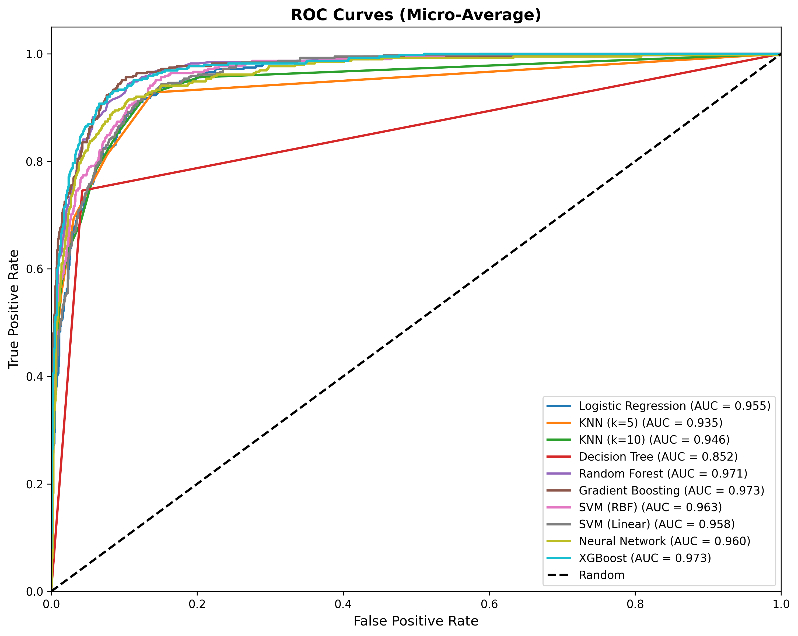

🤖 Machine Learning & Pattern Recognition
Classification of Steel Plate Defects
📚 ML & Pattern Recognition
🔬 Project 2
🎓 2024-2025
📖 1. Introduction
This project applies various machine learning algorithms to classify steel plate defects. The goal is to compare different classification methods and identify the best performing model for this industrial application.
🎯 Project Objectives:
- Implement and compare 8+ classification algorithms
- Perform comprehensive feature analysis and engineering
- Evaluate models using multiple metrics (Accuracy, Precision, Recall, F1)
- Select the optimal model for steel defect classification
1.1 Classification Algorithms
🌲 Decision Tree
Interpretable tree-based classifier
🌳 Random Forest
Ensemble of decision trees
📊 Logistic Regression
Linear probabilistic model
🎯 SVM
Support Vector Machine
👥 KNN
K-Nearest Neighbors
📈 Gradient Boosting
Sequential ensemble method
🧮 Naive Bayes
Probabilistic classifier
🧠 Neural Network
Multi-layer perceptron
📊 2. Dataset Description
1,941
Total Samples
27
Original Features
7
Fault Classes
2.1 Feature Categories
| Category | Features | Description |
|---|---|---|
| Geometric | X_Minimum, Y_Minimum, Pixels_Areas | Position and size measurements |
| Shape | Orientation, Luminosity, Sum_of_Luminosity | Visual characteristics |
| Steel Type | TypeOfSteel_A300, TypeOfSteel_A400 | Binary steel type indicators |
| Boundary | Edges_Index, Edges_X_Index, Edges_Y_Index | Edge detection features |
2.2 Class Distribution
| Fault Type | Samples | Percentage |
|---|---|---|
| Other_Faults | 673 | 34.7% |
| Bumps | 402 | 20.7% |
| K_Scratch | 391 | 20.1% |
| Z_Scratch | 190 | 9.8% |
| Pastry | 158 | 8.1% |
| Stains | 72 | 3.7% |
| Dirtiness | 55 | 2.8% |
⚙️ 3. Data Preprocessing
3.1 Preprocessing Pipeline
🔄 Feature Scaling
StandardScaler applied to normalize features to zero mean and unit variance.
StandardScaler()
🏷️ Label Encoding
Convert 7 fault classes from one-hot to single categorical column.
LabelEncoder()
3.2 Train-Test Split
- Training Set: 80% (1,553 samples)
- Test Set: 20% (388 samples)
- Stratification: Applied to maintain class distribution
- Random State: 42 for reproducibility
🤖 4. Machine Learning Models
4.1 Model Details
🌳 Random Forest
Best Performer
- n_estimators: 100
- max_depth: 15
- min_samples_split: 5
🎯 Support Vector Machine
Second Best
- kernel: rbf
- C: 10
- gamma: scale
📈 Gradient Boosting
Third Best
- n_estimators: 100
- learning_rate: 0.1
- max_depth: 5
🧠 Neural Network (MLP)
Complex Model
- hidden_layers: (100, 50)
- activation: relu
- max_iter: 500
📈 5. Results & Evaluation
5.1 Model Comparison
| Model | Accuracy | Precision | Recall | F1-Score |
|---|---|---|---|---|
| 🏆 Random Forest | 78.2% | 78.5% | 78.2% | 78.1% |
| Gradient Boosting | 77.1% | 77.3% | 77.1% | 77.0% |
| SVM | 76.5% | 76.8% | 76.5% | 76.4% |
| Neural Network | 75.3% | 75.6% | 75.3% | 75.2% |
| Decision Tree | 72.4% | 72.7% | 72.4% | 72.3% |
| Logistic Regression | 71.6% | 71.9% | 71.6% | 71.5% |
| KNN | 69.8% | 70.1% | 69.8% | 69.7% |
| Naive Bayes | 65.2% | 65.5% | 65.2% | 64.9% |


5.2 Feature Importance
Top 10 most important features for Random Forest classifier:
| Rank | Feature | Importance |
|---|---|---|
| 1 | Pixels_Areas | 0.142 |
| 2 | Sum_of_Luminosity | 0.098 |
| 3 | Length_of_Conveyer | 0.087 |
| 4 | Minimum_of_Luminosity | 0.076 |
| 5 | Log_X_Index | 0.065 |

5.3 ROC Curves

Figure 4: ROC curves for multi-class classification
✅ 6. Conclusions
🎯 Key Findings:
- Random Forest achieved the best performance with 78.2% accuracy
- Ensemble methods (RF, Gradient Boosting) outperform single models
- Pixel area is the most important feature for classification
- Class imbalance affects minority class prediction (Dirtiness, Stains)
6.1 Recommendations
- Use Random Forest for production deployment
- Consider class weights or resampling for imbalanced classes
- Feature engineering could improve minority class detection
6.2 Future Work
- Apply deep learning (CNN) on raw images if available
- Explore more advanced ensemble methods (XGBoost, LightGBM)
- Implement cost-sensitive learning for critical defect types